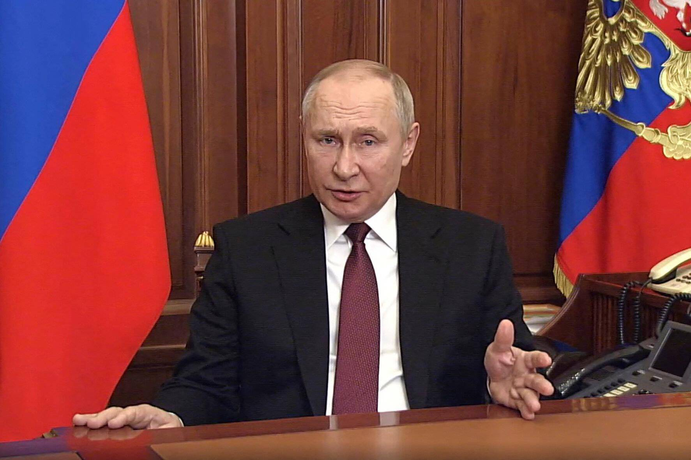
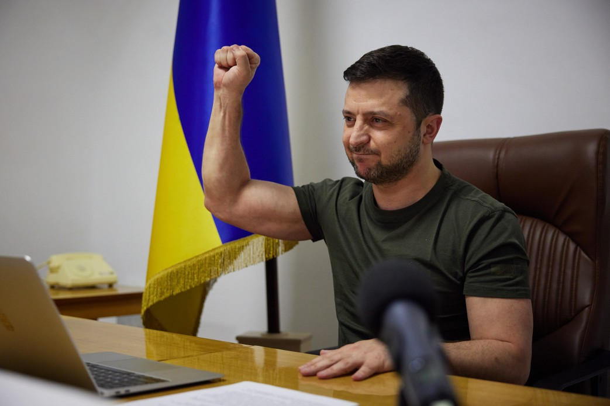

2022年伊始，俄乌局势紧张程度进一步上升。美国情报部门曾认为基辅时间2022年2月16日凌晨3点是俄罗斯向乌克兰出兵20万大军的时间，俄方则表示俄军在15日撤离了边境，受该情报影响，乌克兰汇率直降、外国资本逃离、航班停飞。2022年2月21日，俄罗斯宣布承认顿巴斯地区的顿涅茨克人民共和国和卢甘斯克人民共和国，并签署友好合作互助条约，根据协议，俄军“维和部队”进入顿巴斯协助抵御乌军，并获得建立军事基地的权利。次日，俄罗斯联邦委员会准许俄总统在境外动武。24日清晨，俄罗斯兵分四路，从东、南、北、东北四个方向入侵乌克兰。25日，首批俄军攻入乌克兰首都基辅附近。
普京开战万字演讲
《有必要再一次解释我们为什么要这么做》是俄罗斯总统弗拉基米尔·普京在2022年俄罗斯进攻乌克兰之前于2022年2月24日向俄罗斯公民和乌克兰武装部队军人发表的电视讲话。普京在讲话中提到了俄罗斯高层发动军事行动的动机与最终目标，普京声明受亚速营影响的乌克兰是一个新纳粹国家，并提到了《联合国宪章》第七章第51条，以及北约东扩。 在讲话中，他提到：“再次强调，我方行动是旨在抵御眼下威胁、避免灾难事态扩大的自卫行为。尽管十分困难，但我还是希望广大乌克兰公民能够理解这一点，并（同俄方）开展合作，以便尽快翻过悲惨一页，携手前行，不要再允许任何人对我们两国的内政和彼此关系横加干涉，而应做到独立自主，如此，才能为解决问题创造必要条件，打破国界阻隔，从内部增强彼此凝聚力。我相信这才是我们两国的未来。”“他们欺骗了我们，满嘴跑火车。的确大家常说，政治是肮脏的。也许是吧，但不至于肮脏至此。这种耍滑头的行为违反了国际关系准则，尤其是各国公认的道德和道德规范。正义和真理何在？全是谎言和虚伪”以批评乌克兰和西方，为俄罗斯辩护。

战局迅速发展
2022年2月24日，普京授权俄军在乌克兰进行“特别行动”，“旨在去军事化和去纳粹化乌克兰”，兵分三路进攻乌克兰。在拂晓前，俄军使用高精度武器对乌克兰的军事基础设施、防空系统以及空军进行攻击，在乌克兰南部海岸登陆。在很短时间内，乌克兰海军退出战斗序列、乌空军的基础设施瘫痪、防空力量被完全压制、乌克兰国民卫队司令部被摧毁。基辅州的防守正在被俄军突破。但与网络上流传的“钢铁洪流”、“俄军闪电平推基辅”不一样，俄陆军并没有快速推进，而是通过空军和导弹部队确保制空权并消磨乌军的反抗力量。
泽连斯基回应
2月25日，也就是入侵的第二天，弗拉基米尔·泽连斯基错过了与意大利总理马里奥·德拉吉的预定电话，随后人们逐渐对他的何去何从感到担忧。然而当天傍晚，在几名顾问的陪同下，他在基辅市中心的玛丽亚宫前发布了一段视频。视频中，他发表了简短的讲话，宣称道“我们屹立在此”，“我们将会一直捍卫我们的独立，保护我们的国土，不屈不挠。”晚些时候，他发布了另一段简短的演讲视频，其中表现了俄罗斯对基辅的持续攻击，由此呼吁基辅居民“竭尽所能”进行反击。2月26日，他发表了一篇简短的讲话，警告不法分子不要发布有关他已逃离基辅的虚假信息。同天，他表示他已经拒绝了美国让他从该市撤离的提议，并宣称“这里就是我的战场；我需要的是弹药，而不是撤离的便车。”。2022年3月，泽连斯基就入侵事件向其他国家的立法机构发表了一系列演讲。泽连斯基没有离开过乌克兰国土，并前往哈尔科夫、赫尔松为前线打气，俄罗斯并没有如愿速胜，现在战场形势已经变得不利于俄罗斯。
